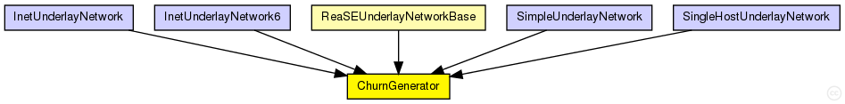
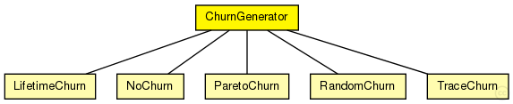

This documentation is released under the Creative Commons license
This documentation is released under the Creative Commons licenseChurnGenerator base module
The following diagram shows usage relationships between types. Unresolved types are missing from the diagram. Click here to see the full picture.
The following diagram shows inheritance relationships for this type. Unresolved types are missing from the diagram. Click here to see the full picture.
| LifetimeChurn (simple module) | (no description) |
| NoChurn (simple module) |
No churn generating class (only bootstraps a networks) |
| ParetoChurn (simple module) |
Lifetime churn based on shifted pareto distribution |
| RandomChurn (simple module) |
Random churn generating module |
| TraceChurn (simple module) | (no description) |
If a module type shows up more than once, that means it has been defined in more than one NED file.
| ReaSEUnderlayNetworkBase (compound module) |
The InetUnderlay ned-file See also: ReaSEUnderlayConfigurator |
| InetUnderlayNetwork (network) |
The InetUnderlay ned-file See also: InetUnderlayConfigurator |
| InetUnderlayNetwork6 (network) |
The InetUnderlay ned-file See also: InetUnderlayConfigurator |
| SimpleUnderlayNetwork (network) |
The SimpleUnderlay ned-file See also: SimpleUnderlayConfigurator |
| SingleHostUnderlayNetwork (network) |
The SingleHostUnderlay ned-file See also: SingleHostUnderlayConfigurator |
| Name | Type | Default value | Description |
|---|---|---|---|
| targetOverlayTerminalNum | int |
number of nodes after init phase |
|
| initPhaseCreationInterval | double |
node creation interval in init phase |
|
| noChurnThreshold | double |
if the lifetimeMean of a specific churn generator exceeds this, NoChurn is used instead |
|
| channelTypes | string |
used (tx) access technologies (from common/channels.ned) |
|
| channelTypesRx | string |
used (rx) access technologies (from common/channels.ned) |
| Name | Value | Description |
|---|---|---|
| display | i=block/timer |
// // ChurnGenerator base module // simple ChurnGenerator { parameters: int targetOverlayTerminalNum; // number of nodes after init phase double initPhaseCreationInterval @unit(s); // node creation interval in init phase double noChurnThreshold @unit(s); // if the lifetimeMean of a specific // churn generator exceeds this, // NoChurn is used instead string channelTypes; // used (tx) access technologies (from common/channels.ned) string channelTypesRx; // used (rx) access technologies (from common/channels.ned) @display("i=block/timer"); }
This documentation is released under the Creative Commons license